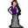

Philippa¶| Stat | Value |
|---|---|
| Class | humanoid |
| HP | 0 |
| Max AP | 10 |
| Attack cost | 10 |
| Move cost | 10 |
| Damage | 0 |
| Attack chance | 0 |
| Block chance | 0 |
| Damage resistance | 0 |
| Critical skill | 0 |
| Critical multiplier | 0 |
Found on¶
Quests¶
- A Feygard delicacy: stages 1, 2, 4, 5, 6, 7, 8
- feygard_nondisplayed (hidden flag): stages 12
Dialogue (31 lines)
What the dialogue says, exactly as in the game files. Lines are listed once; links jump to the line a choice leads to.
village_philippa_initial_selector (silent check: the first matching branch below is taken)
- branch 1 (if reached stage 4 of A Feygard delicacy; carry 1× Honey; carry 1× Butter; carry 1× Wine; carry 1× Raw dough; carry 5× Fig; NOT reached stage 7 of A Feygard delicacy; carry 2× Eggs) → village_philippa_selector_has_ingredients
- branch 2 (if reached stage 4 of A Feygard delicacy; NOT reached stage 7 of A Feygard delicacy) → village_philippa_selector_not_all_ingredients
- branch 3 → village_philippa_initial_phrase
village_philippa_selector_has_ingredients Philippa: “Were you successful in finding all of the items that I've requested of you?”
- “Yes, I have everything that you asked for in order to bake the Feydelight.” → village_philippa_fd_all_items_1
village_philippa_selector_not_all_ingredients Philippa: “Did you find all the ingredients?”
- “What do I need to do again to get my "Feydelight"?” → village_philippa_fd_8
village_philippa_initial_phrase Philippa: “Thank you for rescuing us earlier!”
- “You're welcome, but I was hoping for more than gratitude.” (if NOT reached stage 1 of A Feygard delicacy) → village_philippa_fd_1
- “You're welcome, but I wanted to talk about the "Feydelight" again.” (if latest stage of A Feygard delicacy is 1) → village_philippa_fd_5
- “I am wondering, is my Feydelight ready yet?” (if latest stage of A Feygard delicacy is 7) → village_philippa_fd_complete_selector
village_philippa_fd_all_items_1 Philippa: “Great. I will take them now. But I want to warn you, making this pie will take me a while. Come back later and it will be ready.”
- “Here, take them all.” (if hand over 1× Honey; hand over 1× Butter; hand over 1× Raw dough; hand over 5× Fig; hand over 1× Wine; hand over 2× Eggs) → village_philippa_fd_all_items_2
village_philippa_fd_8 Philippa: “Well, as you are aware, we've been captive for so long. But what you are not aware of, is that while gone, all of my supplies have either gone rotten or been stolen.”
- Next → village_philippa_fd_9
village_philippa_fd_1 Philippa: “If a reward is what your after, then a reward you shall have.”
- “So exciting! I can't wait. Let me have it.” → village_philippa_fd_2_rude
- “Yes, ma'am. Please.” → village_philippa_fd_2_nice
village_philippa_fd_5 Philippa: “Let's get back to talking about those Feydelights.”
- “You said that you bake them, but what is a "feydelight"?” → village_philippa_fd_6
village_philippa_fd_complete_selector (silent check: the first matching branch below is taken)
- branch 1 (if 18 rounds passed since timer “feydelight_baking”) → village_philippa_fd_complete_yes
- branch 2 (if NOT reached stage 12 of feygard_nondisplayed (hidden flag)) → village_philippa_fd_complete_no
- branch 3 (if reached stage 12 of feygard_nondisplayed (hidden flag)) → village_philippa_fd_complete_no_impatient
village_philippa_fd_all_items_2 Philippa: “Come back later and it will be ready.” — effects: sets stage 7 of A Feygard delicacy, starts timer “feydelight_baking”
village_philippa_fd_9 Philippa: “I need supplies. Ingredients to be more specific. I need eleven things, but six unique ingredients.”
- “What?” → village_philippa_fd_10
village_philippa_fd_2_rude Philippa: “Well, maybe with that attitude, you don't derserve one?”
- “I'm sorry. You see, I'm just in love with the new stuff.” → village_philippa_fd_2_nice
village_philippa_fd_2_nice Philippa: “Oh, how polite.”
- Next → village_philippa_fd_3
village_philippa_fd_6 Philippa: “Child, they are a delicious fig pie enjoyed by most Feygardians as an after dinner delicacy, often reserved for holidays and other celebrations.” — effects: sets stage 2 of A Feygard delicacy
- “Is that my reward? A fig pie?” → village_philippa_fd_7
village_philippa_fd_complete_yes Philippa: “Yes. Please enjoy while it's hot.” — effects: sets stage 8 of A Feygard delicacy, gives 1× Feydelight
- Next → village_philippa_try_fd
village_philippa_fd_complete_no Philippa: “Sorry, no it is not. Please come back later.” — effects: sets stage 12 of feygard_nondisplayed (hidden flag)
village_philippa_fd_complete_no_impatient Philippa: “You know, my Feygard customers never pester me like this. They know to be patient and wait for this great delicacy.”
village_philippa_fd_10 Philippa: “Yes. You need to get me some dough, two eggs, butter, honey and five Feygard fig fruits. I also need a bottle of wine. A splash for the pie and the rest of the bottle is for me. Oh don't forget, the figs cannot be found anywhere near…” — effects: sets stage 4 of A Feygard delicacy
- “Dough! Where am I supposed to find dough?” → village_philippa_fd_11
- “I've been across a great amount of Dhayavar and I've not seen honey anywhere.” (if carry 0× Honey) → village_philippa_fd_12
- “Where can I find butter?” → village_philippa_fd_13
village_philippa_fd_3 Philippa: “Do you know what a "Feydelight" is?”
- “No. Should I?” → village_philippa_fd_4
- “Whatever happened to my reward? Thanks for nothing.” → conversation ends
village_philippa_fd_7 Philippa: “Well, of course. But there is a problem.”
- “Oh, I wouldn't expect otherwise.” → village_philippa_fd_8
- “Why is it?” → village_philippa_fd_8
village_philippa_try_fd Philippa: “Would you like to try a piece before you dig into yours?”
- “Nah, thanks anyway.” → conversation ends
- “Yes, please. That would be great.” → village_philippa_try_fd_1
village_philippa_fd_11 Philippa: “Well, Brightport is known for its wondeful bakeries. I would start there. Of course, you could get some in Feygard too. But you need to seek out a baker.” — effects: sets stage 5 of A Feygard delicacy
- “OK, but what about...” → village_philippa_fd_10
village_philippa_fd_12 Philippa: “How about trying a beekeeper? Geez, you are not the smartest are you?” — effects: sets stage 6 of A Feygard delicacy
- “You know what? Now that you mention it, I have met a beekeeper before. But where? Anyway, what about...” (if reached stage 10 of feygard_nondisplayed (hidden flag)) → village_philippa_fd_10
- “OK, but where do I find a beekeeper?” → village_philippa_fd_12_bee
village_philippa_fd_13 Philippa: “Try a bakery. They always need butter.”
village_philippa_fd_4 Philippa: “Well, you see? I make them. Not to brag, but I am in fact, the best baker in Feygard.” — effects: sets stage 1 of A Feygard delicacy
- “But we aren't in Feygard.” → village_philippa_fd_feygard_1
village_philippa_try_fd_1 Philippa: “Here you go. Eat it up while it's hot.” — effects: applies condition food, applies condition haste, applies condition sweet_tooth
- “Oh, man, that was nasty.” → village_philippa_try_fd_nasty
- “That was delicious! But what...is it...doing to me? I feel so funny.” → village_philippa_try_fd_good
village_philippa_fd_12_bee Philippa: “I don't know, kid. Somewhere along the Duleian Road? Towards those savages, maybe?”
- “OK, but what about...” → village_philippa_fd_10
village_philippa_fd_feygard_1 Philippa: “[With a not so appreciative look on here face...] Oh, sometimes I miss that magnificent place so much. Though, I am happier here.”
- “I've never been there, so tell me, is it as great as I've been told?” → village_philippa_fd_feygard_2
village_philippa_try_fd_nasty Philippa: “What?! You ungrateful little brat.”
village_philippa_try_fd_good Philippa: “Oh, that? That's nothing. Just some side effects of great cooking.”
- “Umm...OK.” → conversation ends
village_philippa_fd_feygard_2 Philippa: “I've not the words to begin to describe its magnificence.”
- Next → village_philippa_fd_5
Version history¶
| Version | Change |
|---|---|
| v0.8.12.1 | Added Dialogue: 31 lines added |
Verified against v0.8.18 and every earlier release back to v0.7.0 (game data compared release by release).
Community notes¶
Written by players, not generated from game data. Observations: what players notice in-game · Lore: the in-world story · Trivia: real-world facts, references, development history · Theory / speculation: unconfirmed ideas; may just be unfinished content
Observations¶
Nothing here yet. Know something? Add it.
Lore¶
Nothing here yet. Know something? Add it.
Trivia¶
Nothing here yet. Know something? Add it.
Theory / speculation¶
Nothing here yet. Know something? Add it.
Monster ID: village_philippa · Data from v0.8.18